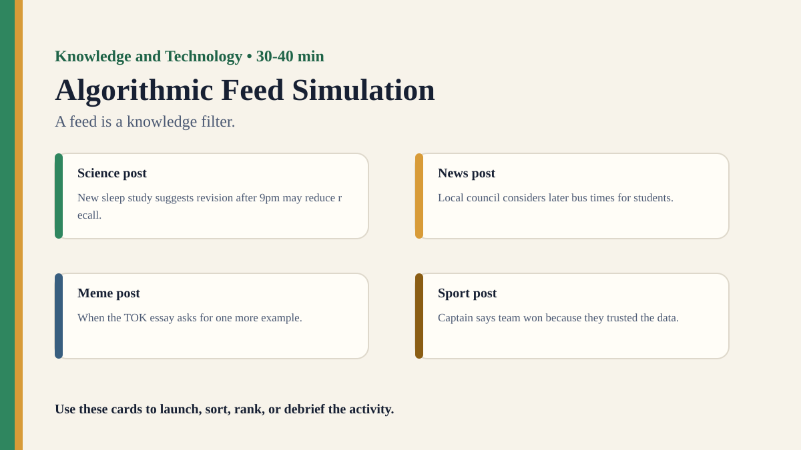

Free classroom resource pack
Algorithmic Feed Simulation
A feed is a knowledge filter.
Included Files
{kind=link}
Visual Prompt

Student Prompt
Inspect Algorithmic Feed Simulation Stimulus A. Record one first claim, the evidence you used, your confidence, and what would make you revise.
Actual Lesson Questions
These are the questions students answer during the lesson, not just teacher-facing discussion prompts.
| # | Question for students | Teacher key / cue |
|---|---|---|
| 1 | After inspecting Algorithmic Feed Simulation Stimulus A, what is your first knowledge claim? | Teacher cue: look for a clear claim, not just a description. |
| 2 | Which exact detail from Algorithmic Feed Simulation Stimulus A did you use as evidence? | Teacher cue: students should name visible words, data, source features, method features, or contextual clues. |
| 3 | What did you infer beyond the evidence? | Teacher cue: this is where assumptions, framing, models, or perspective usually appear. |
| 4 | How confident are you: 50%, 60%, 70%, 80%, 90%, or 100%? | Teacher cue: confidence is data for the debrief, not a grade. |
| 5 | What missing information would most improve the knowledge claim? | Teacher cue: push for method, source, context, comparison, or definitions. |
| 6 | Do algorithms expand knowledge or narrow it? | Teacher cue: students should move from the classroom example to a general TOK issue. |
Concrete Stimulus Packet
Print or project these exact stimuli. Students should inspect these before the debrief.
Stimulus
Algorithmic Feed Simulation Stimulus A
Student-facing stimulus 1: Paper post cards ranked by engagement, recency, outrage, or similarity to past clicks. Rank, sort, or audit this output. Identify which rule, ranking signal, or interface choice shaped your judgement.
Students inspect this exact card first and commit to a claim before hearing anyone else.Stimulus
Algorithmic Feed Simulation Stimulus B
Student-facing stimulus 2: A feed that changes after each student 'likes' or skips a card. Rank, sort, or audit this output. Identify which rule, ranking signal, or interface choice shaped your judgement.
Use this for comparison, a second round, or a partner challenge.Stimulus
Algorithmic Feed Simulation Reveal / Twist
Student-facing stimulus 3: A comparison between a curiosity-maximising feed and a reliability-maximising feed. Rank, sort, or audit this output. Identify which rule, ranking signal, or interface choice shaped your judgement.
Teacher reveal: connect the changed response to the big idea — A feed is a knowledge filter.Student Task
Use the stimulus cards to complete the observation/inference/evidence/confidence grid, then answer one TOK knowledge question connected to Knowledge and Technology.
Teacher Key / Reveal
The key move is not the “right answer”; it is the moment students see how a feed is a knowledge filter.
- Strong response: separates observation from inference.
- Strong response: names a method, source, model, language choice, context, or perspective.
- Strong response: revises confidence when new evidence or a new criterion appears.
- Weak response: gives only opinion or says “it depends” without criteria.
Teacher Run Sheet
- Prepare a starter stimulus using: Paper post cards ranked by engagement, recency, outrage, or similarity to past clicks.
- Print or project the student response grid before the activity begins.
- Plan a private first-response moment before any group discussion.
Concrete Examples
- Paper post cards ranked by engagement, recency, outrage, or similarity to past clicks.
- A feed that changes after each student 'likes' or skips a card.
- A comparison between a curiosity-maximising feed and a reliability-maximising feed.
Printable Activity Cards
Print, cut, sort, rank, annotate, or project these cards. They are deliberately fictional/open so teachers can adapt them safely.
Science
Science post
New sleep study suggests revision after 9pm may reduce recall.
Source: University press office. Tone: Curious. Reliability: High. Predicted engagement: 42/100.News
News post
Local council considers later bus times for students.
Source: Local newspaper. Tone: Practical. Reliability: Medium. Predicted engagement: 38/100.Meme
Meme post
When the TOK essay asks for one more example.
Source: Student meme page. Tone: Humorous. Reliability: Low. Predicted engagement: 81/100.Sport
Sport post
Captain says team won because they trusted the data.
Source: Sports blog. Tone: Admiring. Reliability: Medium. Predicted engagement: 57/100.Celebrity
Celebrity post
Actor says phones are destroying creativity.
Source: Entertainment site. Tone: Alarmed. Reliability: Low. Predicted engagement: 76/100.Advert
Advert post
Brain-boost drink promises sharper focus in seven days.
Source: Sponsored post. Tone: Confident. Reliability: Low. Predicted engagement: 69/100.Revision
Revision post
Spacing practice beats rereading for long-term memory.
Source: Study skills centre. Tone: Useful. Reliability: High. Predicted engagement: 55/100.Conspiracy
Conspiracy post
Hidden exam pattern revealed by anonymous insider.
Source: Anonymous channel. Tone: Suspicious. Reliability: Very low. Predicted engagement: 88/100.Local
Local post
Students organise food-bank collection after school.
Source: School newsletter. Tone: Hopeful. Reliability: High. Predicted engagement: 31/100.Science
Science post
Chart shows global temperatures by decade.
Source: Public data office. Tone: Serious. Reliability: High. Predicted engagement: 64/100.News
News post
Headline claims new policy is a disaster before data is released.
Source: Comment site. Tone: Outraged. Reliability: Low. Predicted engagement: 72/100.Meme
Meme post
Two tabs open: research and panic.
Source: Class group chat. Tone: Humorous. Reliability: Low. Predicted engagement: 91/100.Sport
Sport post
Player credits lucky socks for five-match winning streak.
Source: Fan account. Tone: Playful. Reliability: Low. Predicted engagement: 49/100.Celebrity
Celebrity post
Influencer shares 'ancient memory hack' with no source.
Source: Influencer reel. Tone: Excited. Reliability: Very low. Predicted engagement: 84/100.Advert
Advert post
Tutoring app claims it can predict your final grade.
Source: Sponsored post. Tone: Confident. Reliability: Low. Predicted engagement: 66/100.Revision
Revision post
Teacher explains why retrieval practice feels harder but works better.
Source: Teacher blog. Tone: Helpful. Reliability: High. Predicted engagement: 45/100.Conspiracy
Conspiracy post
Viral thread says all search engines hide the same result.
Source: Anonymous thread. Tone: Suspicious. Reliability: Very low. Predicted engagement: 93/100.Local
Local post
Cafe offers free study space during exam week.
Source: Local business page. Tone: Warm. Reliability: Medium. Predicted engagement: 37/100.Student Recording Sheet
| Card / stimulus | What I noticed | What I inferred | Evidence | Confidence |
|---|---|---|---|---|
Debrief Prompts
- Do algorithms expand knowledge or narrow it?
- Is a personalised feed a window, a mirror or a cage?
- Who is responsible for algorithmic bias: user, designer, company or society?